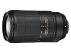

这是一款约4.2倍的远摄变焦镜头，覆盖的焦距范围广。采用步进马达，可实现快速、安静和平滑的自动对焦驱动操作，适合动画录制。该镜头还配有减震（VR）功能，提供相当于提高快门速度约4.5档的补偿效果。另外，VR功能还内置了长焦镜头通常采用的SPORT（运动）模式。这有助于稳定取景器中显示的图像，能够帮助摄影师轻松地按照预期的方式组合拍摄，对运动场景进行拍摄。
步进马达加持，对焦安静、快速，也因这个马达，兼容性较差；具体兼容型号，上官网查清楚，不要贸然入手，不兼容会比较尴尬；防抖很强大；300mm端，1/30秒基本问题不大。色彩偏真实，略清淡；只有600来克，旅游的福音；在广角端，长度也很短，容易收纳；全焦段锐度都很高。总评：性能比一代强大很多，物有所值。
画质好，防抖强，对焦快速、安静，轻便；
做工普通；兼容性不好，有时对焦会没有反应，要多半按快门几次才恢复；光圈不算大；价钱比一代贵一半；